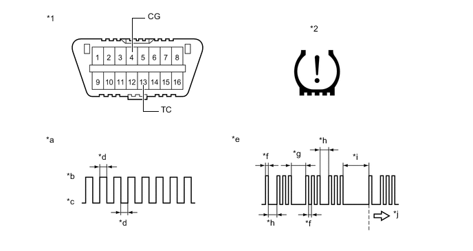

CHECK DTC (for TIRE PRESSURE WARNING ECU AND RECEIVER) (USING GTS)
Turn the power switch off.
Connect the GTS to the DLC3.
Turn the power switch on (IG).
Turn the GTS on.
Enter the following menus: Chassis / Tire Pressure Monitor / Trouble Codes.
Read the DTCs.
CHECK DTC (for TIRE PRESSURE WARNING ECU AND RECEIVER) (USING SST CHECK WIRE)
Turn the power switch off.

| *1 | DLC3 | *2 | Tire Pressure Warning Light |
| *a | Normal System Code | *b | ON |
| *c | OFF | *d | 0.25 sec. |
| *e | Code 13 and 33 | *f | 0.5 sec. |
| *g | 2.5 sec. | *h | 1.5 sec. |
| *i | 4.5 sec. | *j | Repeat |
Using SST, connect terminals 13 (TC) and 4 (CG) of the DLC3.
Turn the power switch on (IG).
Read and record any DTCs indicated by the tire pressure warning light on the combination meter assembly. Refer to the illustration for examples of a normal system code and codes 13 and 33.
Tech Tips
If the tire pressure warning light does not indicate any DTCs or the normal system code, inspect the tire pressure warning light circuit or TC and CG terminal circuit.
| Trouble Area | Link |
|---|---|
| Tire pressure warning light circuit | |
| TC and CG terminal circuit |
If 2 or more malfunctions are indicated at the same time, the lowest numbered DTC is displayed first.
Refer to Diagnostic Trouble Code Chart for DTC information.
After completing the check, turn the power switch off and remove SST from the DLC3.
CHECK DTC (for MAIN BODY ECU (MULTIPLEX NETWORK BODY ECU))
Turn the power switch off.
Connect the GTS to the DLC3.
Turn the power switch on (IG).
Turn the GTS on.
Enter the following menus: Body Electrical / Main Body / Trouble Codes.
Read the DTCs.
CLEAR DTC (for TIRE PRESSURE WARNING ECU AND RECEIVER)
Tech Tips
After repairing the malfunctions, clear the DTCs.
Turn the power switch off.
Connect the GTS to the DLC3.
Turn the power switch on (IG).
Turn the GTS on.
Enter the following menus: Chassis / Tire Pressure Monitor / Trouble Codes.
Clear the DTCs following the prompts on the GTS screen.
Tech Tips
Refer to the GTS operator's manual for further details.
CLEAR DTC (for MAIN BODY ECU (MULTIPLEX NETWORK BODY ECU))
Tech Tips
After repairing the malfunctions, clear the DTCs.
Turn the power switch off.
Connect the GTS to the DLC3.
Turn the power switch on (IG).
Turn the GTS on.
Enter the following menus: Body Electrical / Main Body / Trouble Codes.
Clear the DTCs following the prompts on the GTS screen.
Tech Tips
Refer to the GTS operator's manual for further details.